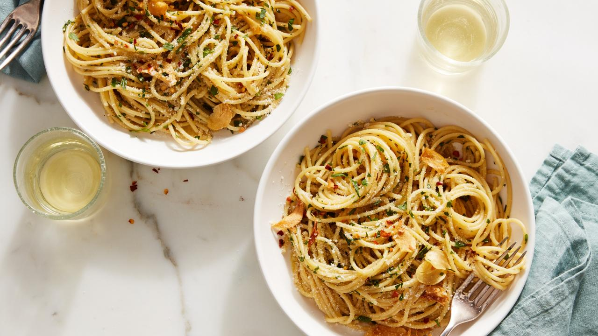

Spaghetti Aglio Olio

This recipe is courtesy of Ina Garten, who hosts Barefoot Contessa on
the Food Network. Very quick and easy, Spaghetti Aglio Olio combines simple
household ingredients into a hearty, tasty meal.
The key to this dish is to use high quality ingredients, whether this be the
pasta or olive oil, and prepare every part of the recipe with utmost care.
Just boiling the pasta is something to perfect for a truly masterful dish.
Ingredients
- 1 pound dried spaghetti, such as DeCecco
- 1/3 cup good olive oil
- 8 large garlic cloves, cut into thin slivers
- 1/2 teaspoon crushed red pepper flakes
- 1/2 cup minced fresh parsley
- 1 cup freshly grated Parmesan cheese, plus extra for serving
Steps
- Bring a large pot of water to a boil.
Add 2 tablespoons of salt and the pasta and
cook according to the directions on the package.
Set aside 1 1/2 cups of the pasta cooking water
before you drain the pasta.
- Meanwhile, heat the olive oil over medium heat in
a pot large enough to hold the pasta, such as a 12-inch
saute pan or a large, shallow pot. Add the garlic and
cook for 2 minutes, stirring frequently, until it
just begins to turn golden on the edges-don't
overcook it! Add the red pepper flakes and cook for
30 seconds more. Carefully add the reserved pasta-cooking
water to the garlic and oil and bring to a boil. Lower the
heat, add 1 teaspoon of salt, and simmer for about 5 minutes,
until the liquid is reduced by about a third.
-
Add the drained pasta to the garlic sauce and toss.
Off the heat, add the parsley and Parmesan and toss well.
Allow the pasta to rest off the heat for 5 minutes for
the sauce to be absorbed. Taste for seasoning and serve
warm with extra Parmesan on the side.